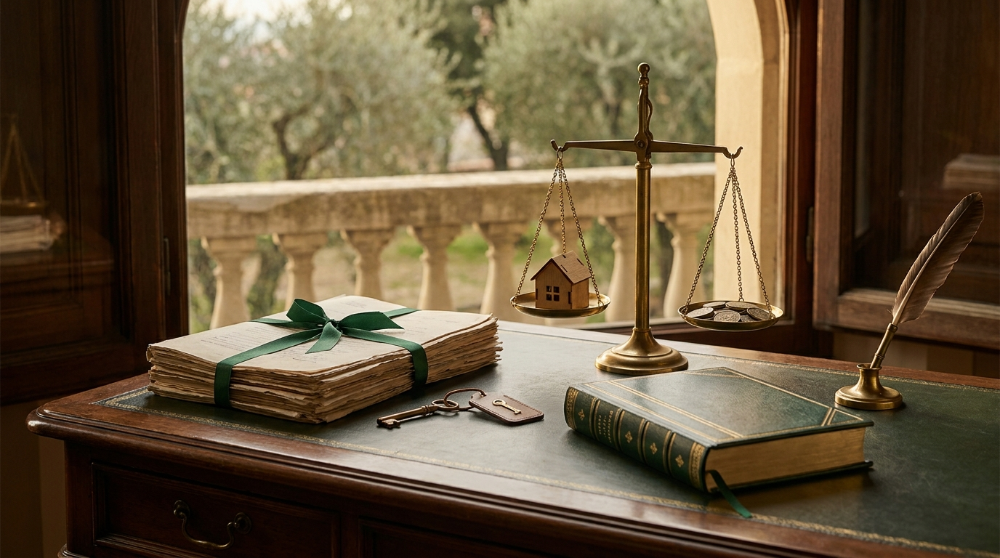

Rent to buy: come funziona l'acquisto di casa con affitto a scalare
Il rent to buy consente di abitare un immobile pagando un canone, parte del quale viene imputata al prezzo di acquisto futuro. È uno strumento utile quando l'acquirente non dispone subito della liquidità o del mutuo, ma richiede attenzione su clausole e tutele. Vediamo come funziona e cosa verificare prima di firmare.

Cos'è il rent to buy
Il rent to buy è un contratto che unisce il godimento immediato di un immobile alla prospettiva del suo acquisto. In pratica, l'acquirente entra subito nella casa pagando un canone periodico. Una parte di quel canone non è affitto in senso stretto: è un acconto sul prezzo finale di vendita, che matura nel tempo.
Lo strumento ha trovato disciplina con l'art. 23 del cosiddetto Decreto Sblocca Italia (D.L. n. 133/2014, convertito in legge n. 164/2014). La norma ha dato veste giuridica certa a una prassi già diffusa, definendone effetti e tutele per entrambe le parti.
Inquadramento normativo
L'art. 23 D.L. n. 133/2014 disciplina i "contratti di godimento in funzione della successiva alienazione di immobili". Il contratto attribuisce subito al conduttore il diritto di godere dell'immobile e gli riconosce il diritto (non l'obbligo) di acquistarlo entro un termine concordato.
Il canone è scisso in due quote: una parte remunera il godimento, l'altra è imputata al corrispettivo della futura compravendita. Il contratto deve indicare la percentuale di canone destinata all'acquisto.
La norma prevede un dato di rilievo: il contratto è soggetto a trascrizione nei registri immobiliari, ai sensi dell'art. 2645-bis del Codice civile. La trascrizione protegge l'acquirente per un periodo che la legge estende fino a dieci anni. Significa che, una volta trascritto, il diritto del conduttore-acquirente prevale su iscrizioni e trascrizioni successive a carico del venditore: ipoteche, pignoramenti o vendite a terzi non possono pregiudicarlo.
La norma regola anche l'inadempimento. Se il conduttore non esercita il diritto di acquisto, il venditore trattiene una parte degli acconti versati, nella misura pattuita. Se invece è il venditore a non adempiere, il conduttore ha diritto alla restituzione della quota destinata al prezzo, con gli interessi.
Implicazioni pratiche
Per chi vuole comprare, il rent to buy offre tempo: consente di abitare subito l'immobile e di accantonare quote del prezzo mentre si lavora alla concessione del mutuo. È utile a chi oggi non ottiene finanziamento ma confida di migliorare la propria posizione.
L'attenzione va alla struttura economica. Il punto critico è la sorte degli acconti in caso di mancato acquisto. Le clausole possono prevedere che il venditore trattenga somme rilevanti: occorre conoscerle prima di firmare, non dopo.
Per il venditore, lo strumento amplia la platea di potenziali acquirenti e garantisce un flusso di canoni. Espone però al rischio che l'acquisto non si perfezioni, con immobile da rimettere sul mercato.
Va distinto il rent to buy da figure simili. Nel leasing immobiliare interviene una banca o un intermediario finanziario; qui il rapporto è diretto tra le parti. Nel contratto preliminare con anticipata immissione nel possesso manca l'imputazione strutturata del canone. Ogni schema ha effetti fiscali e tutele diverse: la qualificazione corretta non è un dettaglio formale.
Cosa fare in concreto
- Verificate la trascrizione. Pretendete che il contratto sia stipulato per atto notarile e trascritto: senza trascrizione la tutela decennale sul diritto di acquisto non opera.
- Leggete la ripartizione del canone. Controllate quale quota è acconto sul prezzo e quale è corrispettivo del godimento. La differenza incide sul recupero delle somme.
- Definite la sorte degli acconti. Stabilite per iscritto cosa accade se l'acquisto non si perfeziona, distinguendo l'ipotesi di vostro recesso da quella di inadempimento del venditore.
- Controllate lo stato dell'immobile. Richiedete visure ipotecarie e catastali aggiornate per accertare ipoteche, pignoramenti o irregolarità prima di vincolarvi.
- Valutate i profili fiscali. Imposte di registro e IVA variano secondo la natura delle quote e dei soggetti coinvolti. Consigliamo una verifica preventiva con un professionista.
Il rent to buy può essere una soluzione efficace, ma la sua tenuta dipende dalla redazione del contratto. Una clausola imprecisa sposta il rischio economico da una parte all'altra. Prima di firmare, conviene far esaminare il testo a un legale.
Contributo informativo a cura di Tamburro & Partners - Avv. Giuseppe Tamburro. Non costituisce parere legale.
Ogni contratto ha il suo equilibrio.
Se vuoi una revisione delle clausole o una redazione su misura, scrivi allo studio. Ti rispondiamo entro un giorno lavorativo.